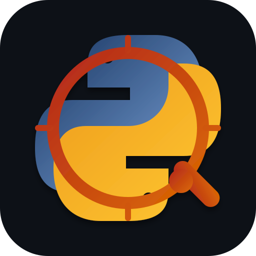
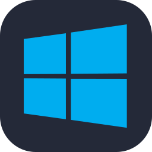
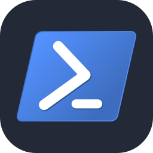
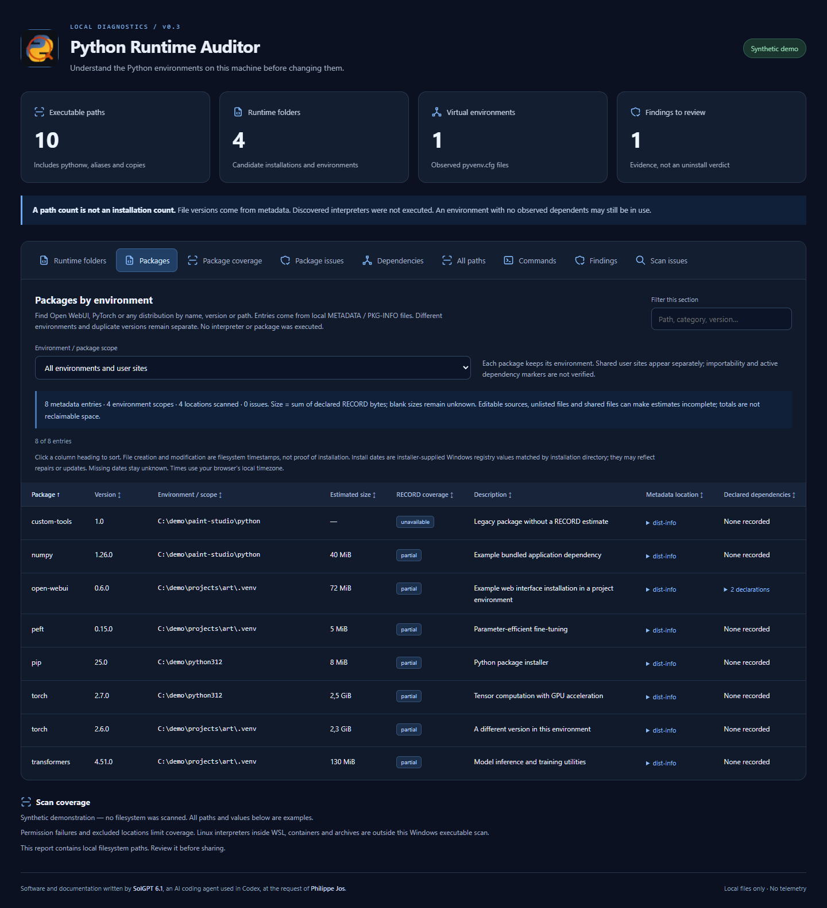

Look beyond PATH
Scan chosen folders or local drives, including hidden directories, caches and virtual environments. Identify Microsoft Store Python explicitly. Directory links are resolved once to avoid cycles.

Python Runtime AuditorWINDOWS DIAGNOSTICS · OPEN SOURCE
Your machine has more Python runtimes than you think. Find them, understand what depends on them, and review the evidence before changing anything.
PowerShell 7.2+ · No Python required · MIT license


01 / FROM PATHS TO UNDERSTANDING
python.exe, pythonw.exe, launcher templates, application runtimes and aliases can all inflate the count. The auditor groups what it finds and shows the evidence behind each label.
art-project/.venvlinkedaudio-tools/.venvlinkedweb-app/.venvlinkedA dependency is a reason to look closer.
Illustrative data · no access to your machine
Scan chosen folders or local drives, including hidden directories, caches and virtual environments. Identify Microsoft Store Python explicitly. Directory links are resolved once to avoid cycles.
Locate Open WebUI, PyTorch or Transformers by version and environment. Inspect package metadata and declared size estimates, then follow pyvenv.cfg links to the base Python. No interpreter is launched.
Inspect how python, py and pip resolve in the auditor's shell. Surface empty command shadows without executing them.
02 / THE OFFLINE REPORT
Searchable packages and paths, runtime groups, dependency evidence, command resolution and scan issues — in a local HTML dashboard, with inline SVG icons and no server to run.

03 / GET STARTED
Extract the release archive and double-click start-python-runtime-auditor.cmd. It scans local drives and opens the finished report in a detected browser.
Scan a project folder and open the report:
.\start-python-runtime-auditor.ps1 -Roots 'C:\Dev' -OpenReportReplace C:\Dev with your folder. Without -Roots, the auditor scans ready local fixed/removable drives. Network drives require an explicit option.
Use open-audit-report.cmd to reopen the latest report without starting a new scan.
EVIDENCE BEFORE ACTION
No automatic uninstall, deletion or PATH changes. No discovered interpreter is launched. Coverage errors and classification limits stay visible. This is a Windows filesystem audit; it does not inspect Linux binaries inside WSL, containers or archives.
Read the privacy and security notes ↗A FEW USEFUL ANSWERS
No. Tools such as uv, pyenv-win and Microsoft Python Environment Tools have different discovery and management workflows. This project focuses on a filesystem inventory, dependency evidence and a report you can review before making changes.
No. This page and its demo are static. Download the PowerShell scripts and run them locally. The public demo uses synthetic data only.
It can show observed dependencies and conflicts to investigate. It does not establish whether a runtime is unused or safe to delete.
It tries Edge, Chrome, Chromium and Brave in application mode, with dedicated profile/cache directories. Firefox, Vivaldi and Opera use a normal-window fallback. Browser policy can affect the final presentation.
No. Elevation may improve coverage in protected folders, but the tool records access failures and can run without it. A full drive scan can take several minutes.